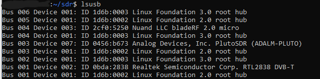
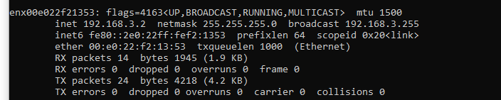

Pluto SDR doesnt automatically connect to ubuntu server as it is a USB device that emulates an ethernet conenction, and ubuntu server does not let USB devices install themselves automatically.
To get it set up, first verify the pluto is connected via lsusb:
lsusb

With the pluto plugged in run:
ip link show
Take note of what is shown.
Unplug the pluto then run it again. Note what is missing.
ip link show
Plug it in again then run it one more time to see the new connection
ip link show
Note the name of the interface - in this case enx00e022f21353

Manually set ifconfig for enx00e022f21353.
sudo ifconfig enx00e022f21353 192.168.3.2 netmask 255.255.255.0 up
Make special note to use the same IP subnet of your pluto (this one is set to the default of 192.168.3.1, so any IP on 192.168.3.x will do).
run ifconfig to see that the new interface exists.
ifconfig

test with a ping
ping 192.168.3.1
if it returns a result, you are good to go!

NOTE, this method will NOT persist across reboots. To do that, do the following method:
sudo nano /etc/netplan/02-usb-device.yaml
add these contents:
network:
version: 2
renderer: networkd
ethernets:
enx00e022f21353: # use your correct interface name here
dhcp4: no
addresses: [192.168.3.2/24]
sudo netplan apply
ping 192.168.3.1